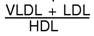

RÉSUMÉ DES CARACTÉRISTIQUES DU PRODUIT
ANSM - Mis à jour le : 07/12/2010
CIPROFIBRATE REF 100 mg, gélule
2. COMPOSITION QUALITATIVE ET QUANTITATIVE
Ciprofibrate ...................................................................................................................................... 100 mg
Pour une gélule.
Pour la liste complète des excipients, voir rubrique 6.1.
Gélule.
4.1. Indications thérapeutiques
Hypercholestérolémies (type II a) et hypertriglycéridémies endogènes de l'adulte, isolées (type IV) ou associées (types II b et III):
· lorsqu'un régime adapté et assidu s'est avéré insuffisant,
· d'autant plus que la cholestérolémie après régime reste élevée et/ou qu'il existe des facteurs de risque associés.
La poursuite du régime est toujours indispensable.
A l'heure actuelle, on ne dispose pas d'essai contrôlé à long terme démontrant l'efficacité du ciprofibrate dans la prévention primaire ou secondaire des complications de l'athérosclérose.
4.2. Posologie et mode d'administration
En association avec le régime, ce médicament constitue un traitement symptomatique à long terme dont l'efficacité doit être surveillée périodiquement.
La posologie est de 1 gélule par jour.
Ce médicament ne doit jamais être prescrit dans les situations suivantes:
· hypersensibilité au ciprofibrate ou à l'un des excipients,
· insuffisance hépatique,
· insuffisance rénale,
· en association avec un autre fibrate (voir rubrique 4.5.).
4.4. Mises en garde spéciales et précautions d'emploi
|
Des atteintes musculaires, y compris d'exceptionnels cas de rhabdomyolyse, ont été rapportés avec les fibrates. Elles peuvent survenir avec une plus grande fréquence en cas d'insuffisance rénale ou d'hypoalbuminémie, comme c'est le cas dans le syndrome néphrotique. |
|
Une atteinte musculaire doit être évoquée chez tout patient présentant des myalgies diffuses, une sensibilité musculaire douloureuse et/ou une élévation importante de la CPK d'origine musculaire (supérieure à 5 fois la normale); dans ces conditions, le traitement doit être arrêté. En outre, le risque d'atteinte musculaire peut être majoré en cas d'association avec un autre fibrate ou avec un inhibiteur de l'HMG-CoA réductase (voir rubriques 4.3 et 4.5). L'atteinte musculaire étant dose-dépendante, la posologie quotidienne ne doit pas être supérieure à 100 mg. |
L'hypothyroïdie, qui peut être une cause de dyslipidémie, doit être diagnostiquée et corrigée avant tout traitement. De plus, cette pathologie est un facteur de risque de myopathie qui pourrait majorer la toxicité musculaire du fibrate.
En raison de la présence de lactose, ce médicament est contre-indiqué en cas de galactosémie congénitale, de syndrome de malabsorption du glucose et du galactose ou de déficit en lactase.
Précautions d'emploi
Chez l'enfant, l'innocuité à long terme n'étant pas démontrée et les effets propres sur le développement d'un organisme en croissance n'étant pas connus, l'utilisation ne doit être envisagée que devant des troubles lipidiques sévères et sensibles au traitement.
Si après une période d'administration de quelques mois (3 à 6 mois), une réduction satisfaisante des concentrations sériques de lipides n'est pas obtenue, des moyens thérapeutiques complémentaires ou différents doivent être envisagés.
Des augmentations des transaminases ont été observées de manière généralement transitoire, chez certains malades. Dans l'état actuel des connaissances, elles paraissent justifier:
· un contrôle systématique des transaminases tous les 3 mois pendant les 12 premiers mois de traitement,
· un arrêt de traitement en cas d'augmentation des ASAT et des ALAT à plus de 3 fois la limite supérieure de la normale.
En cas de traitement conjoint par les anticoagulants oraux, le taux de prothrombine, exprimé en INR, s'impose (voir rubrique 4.5).
4.5. Interactions avec d'autres médicaments et autres formes d'interactions
+ Autres fibrates
Risque majoré d'effets indésirables à type de rhabdomyolyse et d'antagonisme pharmacodynamique entre les deux molécules (voir rubriques 4.3 et 4.4).
+ Inhibiteurs de l'HMG-CoA réductase (statines)
Risque majoré d'effets indésirables à type de rhabdomyolyse (voir rubrique 4.4).
Associations faisant l'objet de précautions d’emploi
+ Anticoagulants oraux
Augmentation de l'effet de l'anticoagulant oral et du risque hémorragique (par déplacement de ses liaisons aux protéines plasmatiques).
Contrôle plus fréquent du taux de prothrombine et surveillance de l'INR. Adaptation de la posologie de l'anticoagulant oral pendant le traitement par le ciprofibrate et 8 jours après l'arrêt de celui-ci (voir rubrique 4.4).
Les résultats des études réalisées chez l'animal n'ont pas mis en évidence d'effet tératogène.
En clinique, aucun effet malformatif ou fœtotoxique n'est apparu à ce jour. Toutefois, le suivi des grossesses exposées au ciprofibrate est insuffisant pour exclure tout risque.
Il n'y a pas d'indication à la prescription des fibrates au cours de la grossesse, à l'exception des hypertriglycéridémies majeures (> 10 g/l) insuffisamment corrigées par la diététique et qui exposent au risque maternel de pancréatite aiguë.
Il n'existe pas d'informations sur le passage du ciprofibrate dans le lait maternel. La prescription est en conséquence déconseillée.
4.7. Effets sur l'aptitude à conduire des véhicules et à utiliser des machines
Sans objet.
Troubles musculaires: comme pour les autres fibrates, des cas d'atteintes musculaires (myalgies diffuses, sensibilité douloureuse, faiblesse), ainsi que des cas exceptionnels de rhabdomyolyse, parfois sévères, ont été rapportés. Ils sont le plus souvent réversibles à l'arrêt du traitement (voir rubrique 4.4).
Effets survenant en début de traitement et moins fréquents par la suite:
· troubles digestifs, gastriques ou intestinaux à type de nausées, vomissements, dyspepsie, diarrhées,
· céphalées, sensations vertigineuses, rares cas de somnolence.
D'autres effets indésirables ont également été rapportés:
· Réactions cutanées: prurit, urticaire, éruption, exceptionnellement réactions de photosensibilité (comme avec les autres fibrates), alopécie.
· Comme pour les autres fibrates, des élévations des transaminases ont été occasionnellement observées (voir rubrique 4.4). De très rares cas de cholestase ou de cytolyse ont également été rapportés.
· Comme pour les autres médicaments de cette classe, quelques cas d'impuissance ont été rapportés.
· Des observations isolées de pneumopathies interstitielles ont été rapportées et/ ou de fibroses pulmonaires ont été rapportés.
On ne dispose pas actuellement d'études contrôlées permettant d'apprécier d'une façon générale les effets indésirables à long terme et plus particulièrement le risque de lithiase biliaire. Néanmoins, des cas isolés de lithiase biliaire ont été rapportés.
Traitement symptomatique, le ciprofibrate n'est pas dialysable.
5. PROPRIETES PHARMACOLOGIQUES
5.1. Propriétés pharmacodynamiques
Classe pharmacothérapeutique: HYPOCHOLESTEROLEMIANTS ET HYPOTRIGLYCERIDEMIANTS/FIBRATES, Code ATC: C10AB08 (C: système cardiovasculaire).
La réduction de la cholestérolémie sous ciprofibrate est due à l'abaissement des fractions athérogènes de faible densité (VLDL et LDL) par inhibition de la biosynthèse hépatique du cholestérol. De plus, la production de HDL-cholestérol (protecteur) est généralement augmentée. Les deux phénomènes contribuent à améliorer la répartition du cholestérol plasmatique en réduisant de façon importante le rapport: qui est fortement accru au cours des hyperlipidémies athérogènes.
Les xanthomes tendineux et tubéreux, les dépôts extravasculaires de cholestérol, de faible densité, peuvent subir sous traitement prolongé efficace (réduction importante de la cholestérolémie) une régression importante, voire une disparition totale.
Un effet antiagrégant plaquettaire et un effet fibrinolytique ont pu être démontrés avec le ciprofibrate.
5.2. Propriétés pharmacocinétiques
Absorption
La concentration plasmatique maximale est atteinte 2 heures après l'administration.
Distribution
Le ciprofibrate étant fortement lié aux protéines plasmatiques, il est susceptible de déplacer certains produits de leur site de fixation.
Il est donc conseillé d'adapter leur posologie, en particulier celle des antivitamines K (voir rubrique 4.4/Précautions d'emploi).
La demi-vie plasmatique est d'environ 17 heures; elle permet une seule prise du médicament par jour.
Métabolisme et élimination
Le ciprofibrate est éliminé sous forme inchangée et glycuroconjuguée. Les études conduites indiquent l'absence d'accumulation et montrent que les taux sanguins sont proportionnels à la dose administrée.
5.3. Données de sécurité préclinique
Sans objet.
Lactose monohydraté, amidon prégélatinisé, silice colloïdale anhydre, stéarate de magnésium.
Enveloppe de la gélule: gélatine, dioxyde de titane (E171), oxyde de fer jaune (E172), oxyde de fer rouge (E172), oxyde de fer noir (E172).
Sans objet.
3 ans.
6.4. Précautions particulières de conservation
Pas de précautions particulières de conservation.
6.5. Nature et contenu de l'emballage extérieur
20, 28, 30 ou 90 gélules sous plaquettes thermoformées (PVC/PVDC/Aluminium).
6.6. Précautions particulières d’élimination et de manipulation
Pas d'exigences particulières.
7. TITULAIRE DE L’AUTORISATION DE MISE SUR LE MARCHE
BIOGARAN
15, BOULEVARD CHARLES DE GAULLE
92700 COLOMBES
8. NUMERO(S) D’AUTORISATION DE MISE SUR LE MARCHE
· 379 733-5 ou 34009 379 733 5 9: 20 gélules sous plaquettes thermoformées (PVC/PVDC/Aluminium).
· 379 734-1 ou 34009 379 734 1 0: 28 gélules sous plaquettes thermoformées (PVC/PVDC/Aluminium).
· 379 735-8 ou 34009 379 735 8 8: 30 gélules sous plaquettes thermoformées (PVC/PVDC/Aluminium).
· 379 736-4 ou 34009 379 736 4 9: 90 gélules sous plaquettes thermoformées (PVC/PVDC/Aluminium).
9. DATE DE PREMIERE AUTORISATION/DE RENOUVELLEMENT DE L’AUTORISATION
[à compléter par le titulaire]
10. DATE DE MISE A JOUR DU TEXTE
[à compléter par le titulaire]
Sans objet.
12. INSTRUCTIONS POUR LA PREPARATION DES RADIOPHARMACEUTIQUES
Sans objet.
Liste II.